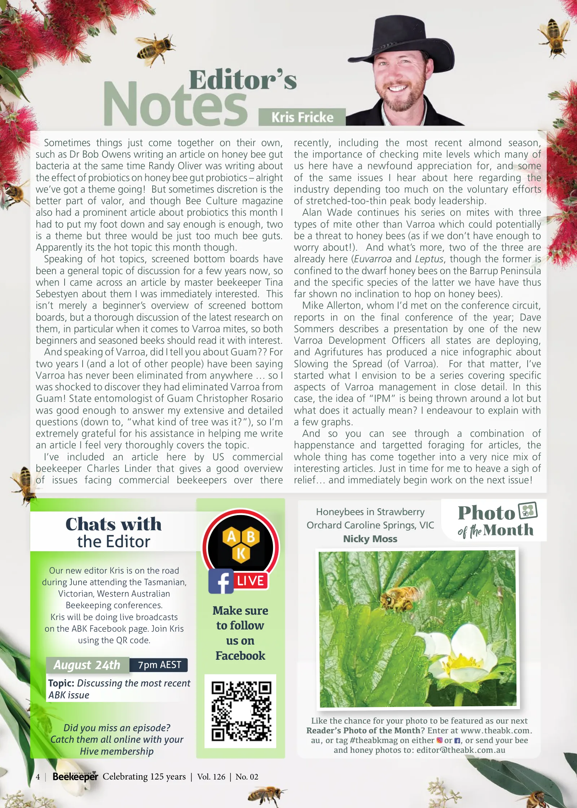

Like the chance for your photo to be featured as our next
Reader’s Photo of the Month? Enter at www.theabk.com.
au, or tag #theabkmag on either or , or send your bee
and honey photos to: editor@theabk.com.au
Sometimes things just come together on their own,
such as Dr Bob Owens writing an article on honey bee gut
bacteria at the same time Randy Oliver was writing about
the effect of probiotics on honey bee gut probiotics – alright
we’ve got a theme going! But sometimes discretion is the
better part of valor, and though Bee Culture magazine
also had a prominent article about probiotics this month I
had to put my foot down and say enough is enough, two
is a theme but three would be just too much bee guts.
Apparently its the hot topic this month though.
Speaking of hot topics, screened bottom boards have
been a general topic of discussion for a few years now, so
when I came across an article by master beekeeper Tina
Sebestyen about them I was immediately interested. This
isn’t merely a beginner’s overview of screened bottom
boards, but a thorough discussion of the latest research on
them, in particular when it comes to Varroa mites, so both
beginners and seasoned beeks should read it with interest.
And speaking of Varroa, did I tell you about Guam?? For
two years I (and a lot of other people) have been saying
Varroa has never been eliminated from anywhere … so I
was shocked to discover they had eliminated Varroa from
Guam! State entomologist of Guam Christopher Rosario
was good enough to answer my extensive and detailed
questions (down to, “what kind of tree was it?”), so I’m
extremely grateful for his assistance in helping me write
an article I feel very thoroughly covers the topic.
I’ve included an article here by US commercial
beekeeper Charles Linder that gives a good overview
of issues facing commercial beekeepers over there
Honeybees in Strawberry
Orchard Caroline Springs, VIC
Nicky Moss
Our new editor Kris is on the road
during June attending the Tasmanian,
Victorian, Western Australian
Beekeeping conferences.
Kris will be doing live broadcasts
on the ABK Facebook page. Join Kris
using the QR code.
Chats with
the Editor
Make sure
to follow
us on
7pm AEST
August 24th
Topic: Discussing the most recent
ABK issue
Did you miss an episode?
Catch them all online with your
Hive membership
recently, including the most recent almond season,
the importance of checking mite levels which many of
us here have a newfound appreciation for, and some
of the same issues I hear about here regarding the
industry depending too much on the voluntary efforts
of stretched-too-thin peak body leadership.
Alan Wade continues his series on mites with three
types of mite other than Varroa which could potentially
be a threat to honey bees (as if we don’t have enough to
worry about!). And what’s more, two of the three are
already here (Euvarroa and Leptus, though the former is
confined to the dwarf honey bees on the Barrup Peninsula
and the specific species of the latter we have have thus
far shown no inclination to hop on honey bees).
Mike Allerton, whom I’d met on the conference circuit,
reports in on the final conference of the year; Dave
Sommers describes a presentation by one of the new
Varroa Development Officers all states are deploying,
and Agrifutures has produced a nice infographic about
Slowing the Spread (of Varroa). For that matter, I’ve
started what I envision to be a series covering specific
aspects of Varroa management in close detail. In this
case, the idea of “IPM” is being thrown around a lot but
what does it actually mean? I endeavour to explain with
a few graphs.
And so you can see through a combination of
happenstance and targetted foraging for articles, the
whole thing has come together into a very nice mix of
interesting articles. Just in time for me to heave a sigh of
relief… and immediately begin work on the next issue!
4 |
Celebrating 125 years | Vol. 126 | No. 02